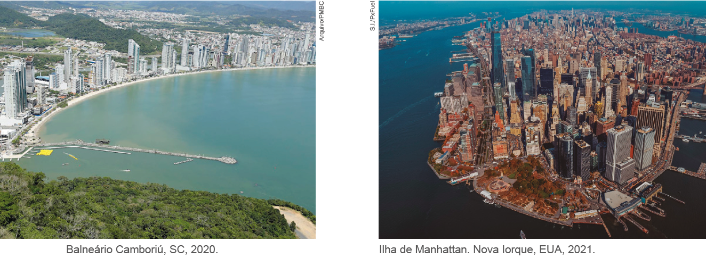

CAPÍTULO 5 - Sistema cartesiano
Localizando lugares e pessoas
Observe a seguir a representação de algumas ruas do centro de um município.
![Ilustração das ruas do município formadas por oito linhas e 11 colunas. As colunas foram nomeadas da esquerda para a direita de Rua A, Rua B, Rua C, Rua D, Rua E, Rua F, Rua G, Rua H, Rua I, Rua J, Rua K, Rua L. As linhas foram nomeadas de baixo para cima de Rua 1, Rua 2, Rua 3, Rua 4, Rua 5, Rua 6, Rua 7, Rua 8. Na Rua B com a Rua 2, o desenho de um lápis. Na Rua D com a Rua 7, uma bandeira. Na Rua G com a Rua 4, um livro. Na Rua J com a Rua 8, um carrinho de supermercado. Na Rua L com a Rua 3, uma bolsa. Abaixo da representação das ruas do centro, uma legenda com o desenho de um carrinho de supermercado representando o supermercado. A bandeira é a Prefeitura. O livro é a Biblioteca. O lápis é a Escola e a bolsa é o Shopping.](../../resources/images/ruas.PNG)
Dona Marta não conhece a cidade e, por isso, está pedindo ajuda.


1. Com base nas informações mostradas na representação, troque ideias com um colega e respondam às questões a seguir no caderno.
a) Onde está Dona Marta?
b) O que há no local onde está Dona Marta?
c) Onde se localiza a prefeitura a que Dona Marta deseja ir?
d) Qual o caminho que Dona Marta poderá percorrer para chegar à prefeitura?
116
UNIDADE 3 - CAPÍTULO 5
Nessa cidade, as letras e os números nomeiam as ruas. A prática de usar números para nomear ruas ocorre em algumas cidades, tanto aqui no Brasil quanto em outros países. Por exemplo, o município de Balneário Camboriú, em Santa Catarina, e a cidade de Nova Iorque, nos Estados Unidos.
Se algum morador da cidade representada fosse responder à pergunta de Dona Marta, é provável que lhe respondesse: (D,7). E se ela lhe perguntasse sobre a localização da escola, sua resposta seria: (B,2).
2. Agora, usando essa maneira simplificada, registrem no caderno qual a localização:
a) da biblioteca;
b) do supermercado;
c) do shopping.
Descrever a localização e o percurso é uma necessidade muito presente em nosso dia a dia, seja para realizar um simples deslocamento de casa até a escola ou como um processo fundamental nas navegações marítimas e aéreas. Quando um avião sai de uma cidade com destino a outra, por exemplo, ele se desloca de uma localização geográfica para outra.
UNIDADE 3 - CAPÍTULO 5
117
A localização geográfica de uma cidade é dada por um sistema de coordenadas que usa como referência a Linha do Equador – paralelo principal que divide a Terra nos hemisférios Norte e Sul – e o Meridiano de Greenwich, que divide a Terra nos hemisférios Ocidental (oeste) e Oriental (leste).
Veja, no mapa-múndi, as representações das posições geográficas de três cidades: Brasília (Brasil), Londres (Inglaterra) e Tóquio (Japão).
![Ilustração do Mapa-múndi com linhas verticais e horizontais indicando coordenadas geográficas. As linhas verticais parte do centro do mapa, no Meridiano de Greenwich, indicando zero grau. Os graus aumentam dessa linha para a esquerda, em direção à Oeste. E dessa linha para a direita, em direção ao Leste. Outras linhas na horizontal ajudam na localização das cidades no mapa. A linha central, onde fica o Equador, possui zero grau e aumenta do Equador para cima, ao norte. Também do Equador para baixo, ao sul do mapa. Brasília está destacada no mapa. Ela na região centro-sul do Brasil. Pelas linhas verticais, ela fica entre 30 e 60 graus. Pelas linhas horizontais, entre zero e 20 graus. Londres localizada na parte central e superior do mapa, acima da África e próximo ao Meridiano de Greenwich. Pelas linhas horizontais, está próxima de 60 graus. Tóquio à direita do mapa, fica acima da linha horizontal que indica 30 graus. No canto inferior e direito do mapa o cruzeiro do Sul, indicando N para cima, Sul para baixo, Oeste para a esquerda e Leste para a Direita.](../../resources/images/000258.png)
As coordenadas geográficas dessas três cidades são:
Brasília
está localizada a 15°45’ sul e 47°57’ oeste;
Londres
está localizada a 51°3’ norte e 0°1’ leste;
Tóquio
está localizada a 35°41’ norte e 139°44’ leste.
O mapa-múndi, o sistema de GPS, os gráficos e os mapas em geral são baseados no sistema de coordenadas cartesianas, idealizado pelo matemático René Descartes (1596-1650).
Além de grande filósofo, René Descartes foi também um destacado matemático. Viveu a maior parte de sua vida na Holanda, onde produziu vários escritos, entre eles La Géométrie (A geometria), sua única publicação mate-mática. Nessa obra, Descartes mostrou como duas retas numéricas perpendiculares, chamadas de eixos, que geralmente são indicados por eixo x (reta horizontal) e eixo y (reta vertical), formam um plano chamado de plano cartesiano. Esse sistema hoje é conhecido como sistema de coordenadas cartesianas, em homenagem a seu criador.

UNIDADE 3 - CAPÍTULO 5
118
Vamos verificar como construir um sistema de coordenadas cartesianas por meio de um plano cartesiano. Observe:

► a reta x é a reta na posição horizontal do plano cartesiano. É chamada de eixo x ou eixo das abscissas;
► a reta y é a reta na posição perpendicular, sendo chamada de eixo y ou eixo das ordenadas;
► o ponto de intersecção dos eixos x e y é identificado como o ponto de origem O;
► utilizando a mesma unidade de medida, numeramos os eixos x e y, obtendo o plano cartesiano.
Pontos no plano cartesiano
No plano cartesiano a seguir estão destacados alguns pontos:

UNIDADE 3 - CAPÍTULO 5
119
A localização do ponto A no plano cartesiano é representada por um par de números, respeitando uma ordem de indicação para os números, chamada de par ordenado.
► As coordenadas do ponto A são (3, 5), sendo 3 o primeiro elemento do par e 5 o segundo elemento.
► O ponto B tem coordenadas (5, 3).
► O ponto C tem coordenadas (1, 2) e o ponto D tem coordenadas (2, 1).
Observe que os pares ordenados (1, 2) e (2, 1) são diferentes, representam pontos distintos no plano cartesiano. Por isso, é importante prestar atenção quando for escrever as coordenadas de um ponto.
► O primeiro elemento do par ordenado indica a posição em relação ao eixo x e o segundo elemento indica em relação ao eixo y.
► Indica-se a localização do ponto E da seguinte forma: E(4, 4).
ENCONTRE SOLUÇÕES
1. Batalha naval é um jogo para dois competidores cujo objetivo é afundar todo o arsenal do oponente. Para tanto, cada jogador procura adivinhar em que coordenada está posicionado o arsenal do adversário.

Peças do jogo

Preparação para o jogo
► Cada participante deverá utilizar dois pedaços de papel quadriculado.
► No papel quadriculado desenhe dois tabuleiros como no modelo acima.
► Cada jogador distribui seu arsenal pelo tabuleiro 1, marcando nele os quadradinhos referentes a cada componente.
► O tabuleiro 2 deverá ser usado para marcar as coordenadas que você falar. Dessa forma, saberá quais coordenadas já foram usadas para tentar afundar o arsenal do seu adversário.
► Não é permitido que dois ou mais componentes do arsenal se toquem.
► O jogador não deve revelar ao adversário a localização dos seus componentes.
Como jogar
1. Cada jogador, na sua vez, deverá arriscar três coordenadas, indicando- as pelos números da coluna (x) e da linha (y) que definem a posição. Para que o jogador tenha o controle das coordenadas escolhidas e evite repeti-las, é preciso que ele as registre no tabuleiro 2.
2. Após dizer cada posição, o oponente avisa se o jogador acertou o alvo e, nesse caso, qual componente foi atingido. Se ele for afundado, esse fato também deve ser informado ao jogador. Por exemplo: supondo que o oponente tenha marcado um cruzador nas coordenadas (5, 4) e (6, 4), se o jogador indicar três posições e uma delas for (5, 4), o alvo foi atingido, mas não afundado; nesse caso, o adversário deve lhe dar essa informação.
120
UNIDADE 3 - CAPÍTULO 5
3. A cada acerto de um alvo, o oponente deve marcá-lo em seu tabuleiro para que possa informar ao jogador quando o componente for atingido e/ ou afundado.
4. Um componente será afundado quando todas as casas que o formam forem atingidas.
5. Após arriscar as três coordenadas e obter as respostas do oponente, será a vez do outro jogador.
6. O jogo termina quando um dos jogadores conseguir afundar todo o arsenal do seu oponente.
Observação
É importante que as coordenadas cartesianas indicadas sejam anotadas, pois assim, torna-se mais fácil conferir se o oponente as marcou corretamente.
2. Em seu caderno, escreva as coordenadas cartesianas dos pontos destacados no plano cartesiano a seguir.

3. Observe o triângulo ABC desenhado neste plano.

a) Quais são as coordenadas dos vértices desse triângulo?
b) Qual a classificação desse triângulo de acordo com as medidas dos seus ângulos?
b) Qual a classificação desse triângulo de acordo com as medidas dos seus lados?
4. Os pontos A(2, 1), B(6, 1), C(2, 3) e D(6, 3) são vértices de um quadrilátero. Desenhe-o em um papel quadriculado e escreva em seu caderno o nome desse quadrilátero
5. Os segmentos AB, CD e se cruzam no ponto P. Determine as coordenadas do ponto P, sabendo que A(0, 6), B(3, 0), C(1, 0) e D(3, 4).
6. Com o auxílio de uma régua, ligue consecutivamente os pontos determinados pelas coordenadas abaixo. Que figura é formada?
► A(1, 2) ► C(6, 4)► B(3, 4) ► D(7, 2)
7. Em uma folha de papel quadriculado, construa um plano cartesiano e marque nele os pontos que sejam vértices de um: formada?
a)triângulo isósceles; c) quadrado;b) pentágono; d) paralelogramo.
► Após escolher os pontos, una-os desenhando as figuras geométricas. Escreva em seu caderno as coordenadas dos vértices que formam cada uma delas.
UNIDADE 3 - CAPÍTULO 5
121